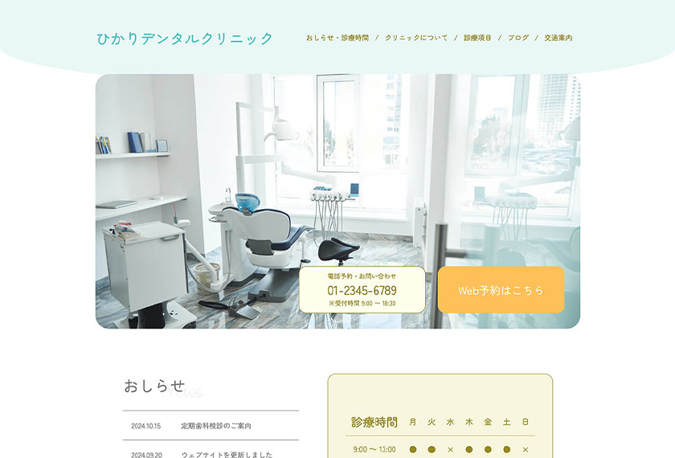

Webデザイン・コーディング
【概要】
幅広い年代の患者が利用しやすい、デンタルクリニックホームページ。
※架空の企業を想定したWebサイト。
【想定ユーザー】
子供から高齢者まで幅広い年代の患者と、その家族。
【想定される利用シーン】
自宅で検索、クリニックの雰囲気を知りたい、あまり時間をかけずに知りたい情報を得たい。
【想定課題】
初めて利用する患者や、Webサイトの閲覧に慣れていない子供や高齢者が、クリニックの雰囲気や必要な情報を確認できず、不安を感じる可能性がある。
【デザイン方針】
「安心感」と「情報へのアクセスのしやすさ」を重視。
【デザインでの工夫】
・パステルカラーと丸みのある形状で親しみやすさややさしい雰囲気を表現。
・予約、診療時間をファーストビュー付近に配置。頻繁に問い合わせがあると思われる項目に視線がとまりやすい配置にした。
・情報を整理し、必要な情報を見つけやすい構成にした。
(診療項目など、よくある質問や知りたいと思われる内容を優先的に表示し、その他の項目は詳細ページへ誘導する構成など。)
担当領域：設計、デザイン、コーディング
制作ツール：XD, VSCode
制作時間：19時間